PS1600 PPMU AWG Channel Assignment Considerations
Khaled Ben-Fatma, Advantest
Paper-ID: 342968, July 2017
Abstract
The PS1600 per-pin parametric measurement unit (PPMU) can be used as an arbitrary waveform generator (AWG) supporting both voltage and current waveforms.
The effective sample rate of the PPMU depends on the settling time of the instrument. The maximum AWG sample rate is set to 150 ksps (75 ksps if differential pin-pair PPMUs are used in parallel).
For best AWG performance certain considerations need to be followed. In addition to the required settling time you need to consider recommendations with regard to the DUT board when assigning DUT pins to digital channels that will be used as AWG sources. These are described in this paper.
PPMU Voltage Reprogramming
Each time the PPMU level is reprogrammed the settling time of the instrument must be considered. The settling time consists of the PPMU reprogramming time plus the time required to reach the target level. During the PPMU reprogramming phase glitch detection/correction is applied in order to avoid large glitches.
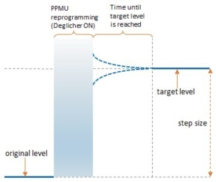
Figure 1: PPMU settling time
At the same time the de-glicher circuitry attempts to hold the output voltage at a constant level. Nevertheless, voltage variations or overshoots in the order of several mV can still occur and can last for up to 4 us (8 us if differential pin-pair PPMUs are used in parallel).
Channel Assignment Considerations
Voltage variations can occur on all channels but only within the settling time of the PPMU as allowed by the PPMU specification. Once the PPMU has settled the output voltage is very stable.
During the PPMU reprogramming phase the positive channels in a differential pin-pair (xxx01, xxx02, xxx05, xxx06, xxx09, xxx10, xxx13, xxx14) show better behavior than the negative channels (xxx03, xxx04, xxx07, xxx08, xxx11, xxx12, xxx15, xxx16) when the programmed voltage step size is below 20mV:
- On the positive channels the voltage variation is very small (typically below 4 mV relative to the original level) and overshoots may not occur during the PPMU reprogramming phase.
- On the negative channels overshoots can reach up to around 20 mV (relative to the original level). These overshoots do not appear if the incremental step size is positive and close to, or greater than, 20 mV.
For step sizes greater than 20mV no differences have been observed.
Figure 2 to 7 compare positive and negative channels for step sizes above and equal to 20 mV, while Figure 8 to 13 compare positive and negative channels for step sizes below 20 mV.
Conclusions and Recommendations
These recommendations are to be observed only if you need to program analog waveforms using the PS1600 PPMU AWG with step sizes below 20 mV. When assigning DUT pins to digital channels try to avoid assigning pins to negative channels that will be used as PPMU AWG with step sizes below 20 mV. Use positive channels instead.
If you still need to use negative channels then follow the recommendations outlined below to achieve best linearity performance:
- Sample around the transient period: that is, synchronize the DUT timing with the PPMU waveform such that DUT A/D conversions do not occur during the transient period (the PPMU reprogramming time plus the settling time) but rather after the settling time for each PPMU step.
- If the DUT needs to sample the waveform at a faster rate and you cannot avoid the transient period then simply discard the samples that fall at the start of each PPMU step and use the remaining samples.
- Use filters to remove the high frequency portion of the signal.
Figures
Voltage staircase waveform: comparing positive channels (on the left left) and negative channels (on the right) for different step sizes.
|
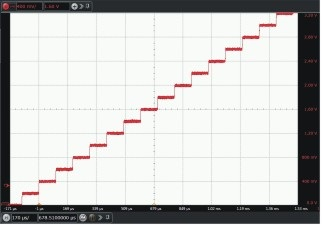 |
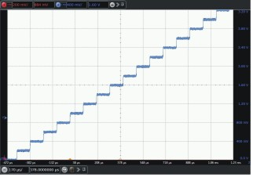 |
| Figure 2 - Positive channel, 200mV steps | Figure 3 - Negative channel, 200mV steps |
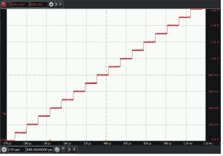 |
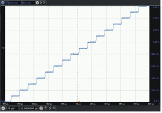 |
| Figure 4 - Positive channel, 100mV steps | Figure 5 - Negative channel, 100mV steps |
|
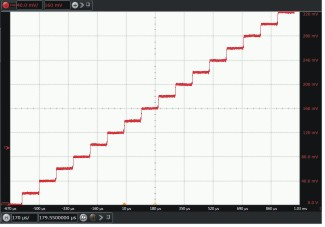 |
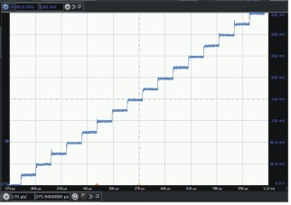 |
| Figure 6 - Positive channel, 20mV steps | Figure 7 - Negative channel, 20mV steps |
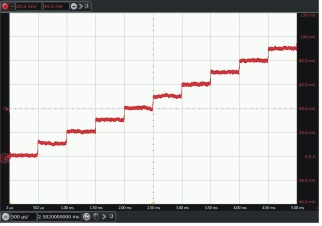 |
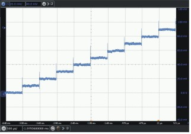 |
| Figure 8 - Positive channel, 10mV steps | Figure 9 - Negative channel, 10mV steps |
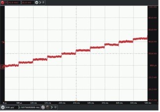 |
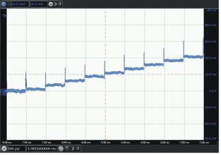 |
| Figure 10 - Positive channel, 5mV steps | Figure 11 - Negative channel, 5mV steps |
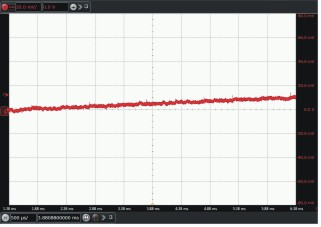 |
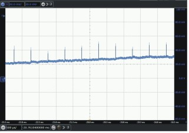 |
| Figure 12 - Positive channel, 1mV steps | Figure 13 - Negative channel, 1mV steps |